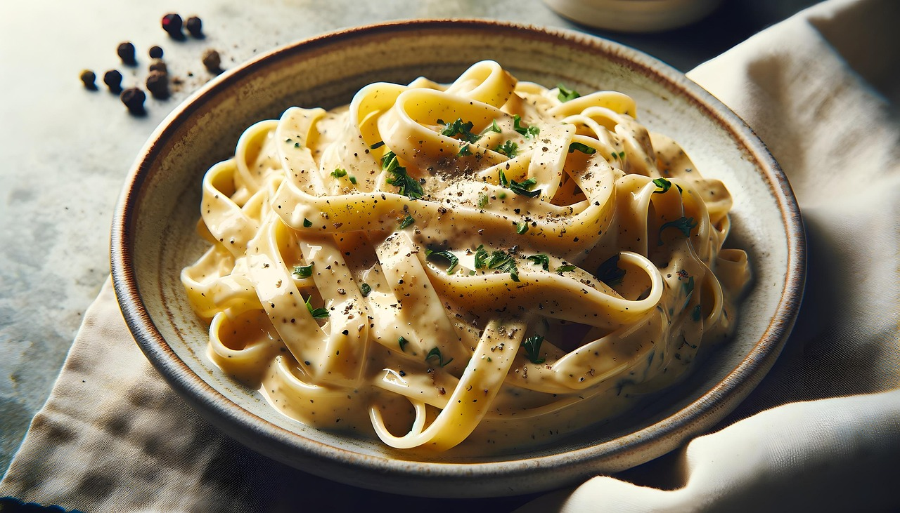

Traditional Alfredo

This one of my favorite dishes, not only because it is incredibly delicious, but it's also SO quick and easy to make. It's great for nights where you don't feel like doing much or for a quick and easy lunch.
Ingredients
- 1 stick of cubed butter
- A block of Parmigiano Reggiano
- Pappardelle or Tagliatelle pasta
- 1 cup of pasta water
Instructions
- Get your water boiling and choose your pasta. Wide flat pasta like Pappardelle or Tagliatelle work best, but you can stick with good ol' fettucine if you want.
Make sure you use just enough water to cover the pasta and not any more! If you use too much water it won't be starchy enough to thicken and emulsify the sauce properly.
Good starchy water is the secret ingedient to great alfredo.
- Grate your parmesan while the pasta boils. Generally you want a good medium firm Parmigiano-Reggiano. A too soft block will clump and won't provide as good a
flavor, but using a truly firm cheese would be a huge waste as the heat will denature the more volatile flavor compounds. You will need at least 4 ounces for 1 pound of
pasta, but I generally use a bit more. You should go by sauce consistency and flavor to nail down how much to use exactly. Grate the Parmigiano-Reggiano as finely as possible.
A finer grate will allow the cheese to melt faster and more evenly. Personally, I use a microplane for mine.
- Once your pasta is a good al dente, remove it from the water. Pasta is al dente when it is mostly soft, but still have a slightly firm center with some chew on it.Make sure to reserve at least 1 cup of the water!
- Turning the heat down to low, melt your butter in the pot, then add about half of a cup of pasta water. Slowly add the grated Parmigiano-Reggiano until it is
completely incorporated. Make sure to keep stirring or some cheese may stick to the bottom!
- Use more grated Parmigiano-Reggiano and pasta water as necessary until you get the right consistency. The sauce should cling to a spoon and slowly drip off when dipped and turned sideways. Then add the pasta and mix until well coated.
- Enjoy your easy and delicious meal! Once you've made this a few times, you'll be able to do it in your sleep.